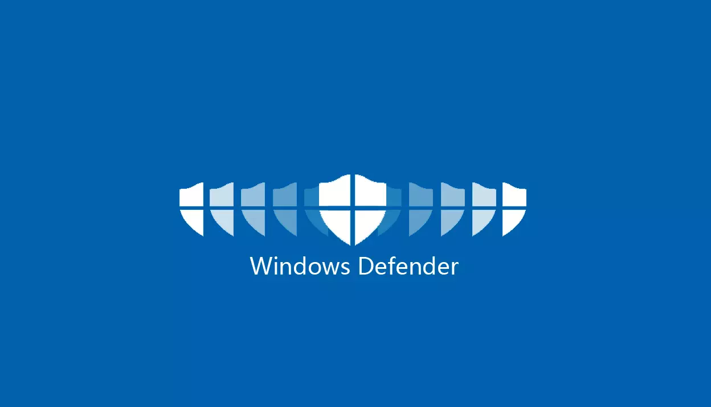

A Microsoft Defender (konkrétan a Microsoft Defender Antivirus és korábban Windows Defender ) a Microsoft Windows kártevőirtó összetevője . Először letölthető ingyenes kémprogram-elhárító programként adták ki Windows XP rendszerhez , és Windows Vista és Windows 7 rendszerrel szállították . Teljes víruskereső programmá fejlődött, amely felváltotta a Microsoft Security Essentials -t a Windows 8 és újabb verzióiban.
